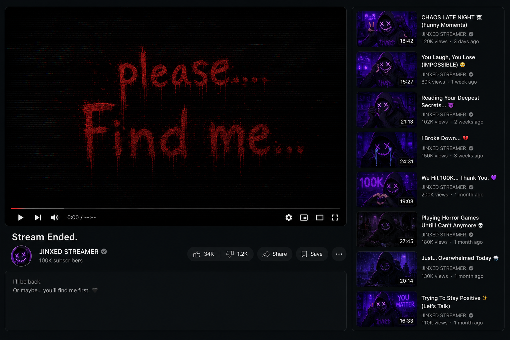

STREAM STATUS : OFFLINE
LAST SEEN LIVE
Streamer "Jinxed Streams" disappeared 21 days ago. No one heard from Jinxed Streams after the final broadcast. Except for a small group of viewers who received anonymous emails days later.

STREAM STATUS : OFFLINE
Streamer "Jinxed Streams" disappeared 21 days ago. No one heard from Jinxed Streams after the final broadcast. Except for a small group of viewers who received anonymous emails days later.
